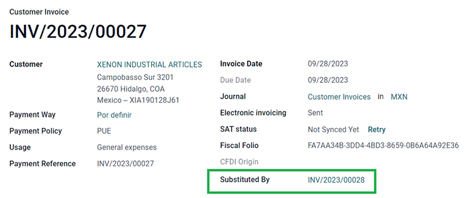
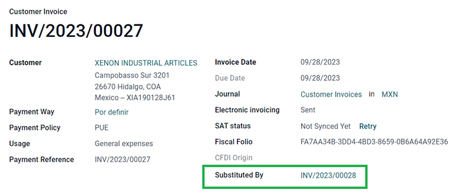
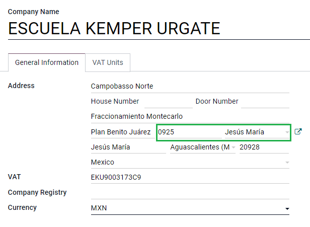
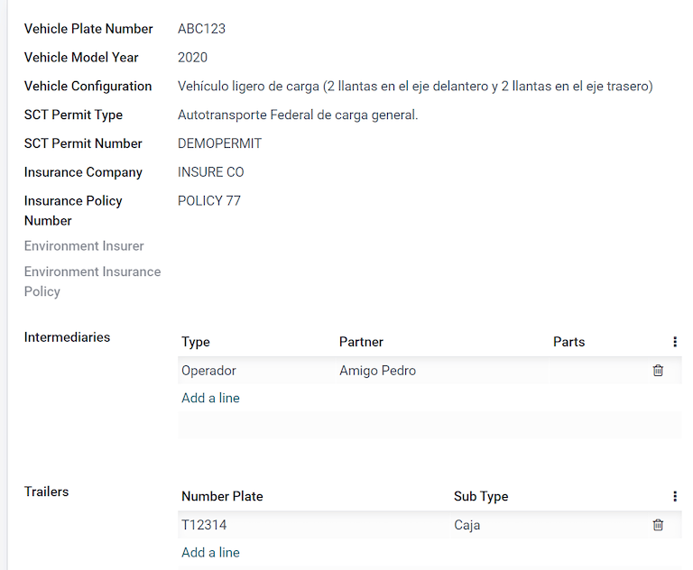

ประเทศเม็กซิโก¶
การสัมมนาผ่านเว็บ¶
มีวิดีโอเกี่ยวกับการประยุกต์ใช้สำหรับประเทศเม็กซิโกด้วย วิดีโอนี้ครอบคลุมถึงวิธีการปรับใช้การประยุกต์ใช้นี้ตั้งแต่เริ่มต้น รวมถึงวิธีตั้งค่าคอนฟิก วิธีดำเนินการเวิร์กโฟลว์ทั่วไปให้เสร็จสิ้น และให้ข้อมูลเชิงลึกเกี่ยวกับกรณีการใช้งานเฉพาะต่างๆ
แนะนำ¶
โมดูลการประยุกต์ใช้สำหรับประเทศเม็กซิโกของ Odoo ช่วยให้สามารถลงนามในใบแจ้งหนี้อิเล็กทรอนิกส์ได้ ตามข้อกำหนดของ SAT สำหรับ เวอร์ชัน 4.0 ของ CFDI ซึ่งเป็นข้อกำหนดทางกฎหมาย ณ วันที่ 1 มกราคม 2022 โมดูลเหล่านี้ยังเพิ่มระบบบัญชีที่เกี่ยวข้องกับการรายงาน (เช่น: DIOT เปิดใช้งานการค้าต่างประเทศ และการสร้างคู่มือการจัดส่ง)
Note
ในการลงนามในเอกสารใน Odoo ด้วยระบบอิเล็กทรอนิกส์ โปรดตรวจสอบให้แน่ใจว่าได้ติดตั้งแอปพลิเคชัน การเซ็น แล้ว
การกำหนดค่า¶
ข้อกำหนด¶
จำเป็นต้องปฏิบัติตามข้อกำหนดต่อไปนี้ก่อนที่จะกำหนดค่าโมดูลการประยุกต์ใช้สำหรับประเทศเม็กซิโกใน Odoo:
ลงทะเบียนใน SAT โดยมี RFC ที่ถูกต้อง
มี ใบรับรองตราดิจิทัล (CSD)
เลือก PAC (Proveedor Autorizado de Certificación / ผู้ให้บริการออกใบรับรองที่ได้รับอนุญาต) ปัจจุบัน Odoo ทำงานร่วมกับ PACs ต่อไปนี้: Solución Factible, Quadrum (เดิมชื่อ Finkok) และ SW Sapien - Smarter Web
มีความรู้และประสบการณ์ด้านการเรียกเก็บเงิน การขาย และระบบบัญชีใน Odoo เอกสารนี้**เท่านั้น**ประกอบด้วยข้อมูลที่จำเป็นในการใช้ Odoo
การติดตั้งโมดูล¶
ติดตั้ง โมดูลต่อไปนี้เพื่อรับฟีเจอร์ทั้งหมดของการประยุกต์ใช้สำหรับประเทศเม็กซิโก จำเป็นต้องติดตั้งโมดูล ระบบบัญชี และ รายชื่อผู้ติดต่อ สำหรับการกำหนดค่านี้:
ชื่อ |
ชื่อทางเทคนิค |
คำอธิบาย |
|---|---|---|
ประเทศเม็กซิโก - ระบบบัญชี |
|
ค่าเริ่มต้น แพ็คเกจการประยุกต์ใช้ทางการเงิน จะเพิ่มคุณลักษณะทางบัญชีสำหรับการประยุกต์ใช้สำหรับประเทศเม็กซิโก เช่น: ภาษีที่พบบ่อยที่สุดและผังบัญชี – ตาม รหัสการจัดกลุ่มบัญชี SAT. |
EDI สำหรับประเทศเม็กซิโก |
|
รวมข้อกำหนดด้านเทคนิคและการทำงานทั้งหมดเพื่อสร้างและตรวจสอบ เอกสารอิเล็กทรอนิกส์ — ตามเอกสารทางเทคนิคที่เผยแพร่โดย SAT วิธีนี้ช่วยให้คุณสามารถส่งใบแจ้งหนี้ (โดยมีหรือไม่มีส่วนเพิ่มเติม) และการชำระเงินเพิ่มเติมให้กับรัฐบาลได้ |
EDI v4.0 สำหรับประเทศเม็กซิโก |
|
จำเป็นในการสร้างเอกสาร XML ด้วยข้อกำหนดที่ถูกต้องของ CFDI 4.0 |
รายงานการประยุกต์ใช้สำหรับประเทศเม็กซิโกบน Odoo |
|
ปรับรายงานสำหรับการบัญชีอิเล็กทรอนิกส์ของประเทศเม็กซิโก: ผังบัญชี งบทดลอง และ DIOT |
เม็กซิโก - รายงานการประยุกต์ใช้สำหรับการปิดกิจการ |
|
จำเป็นในการสร้างรายการปิดบัญชี (หรือที่เรียกว่า การย้ายเดือนที่ 13) |
Odoo Mexican XML Polizas Export |
|
อนุญาตให้ส่งออกไฟล์ XML ของรายการสมุดรายวันเพื่อการตรวจสอบภาคบังคับ |
Odoo Mexican XML Polizas Export Edi bridge |
|
เสริมโมดูล |
Note
เมื่อติดตั้งฐานข้อมูลตั้งแต่ต้นและเลือก ประเทศเม็กซิโก เป็นประเทศ Odoo จะติดตั้งโมดูลต่อไปนี้โดยอัตโนมัติ: ประเทศเม็กซิโก - ระบบบัญชี, EDI สำหรับประเทศเม็กซิโก และ EDI v4 .0 สำหรับประเทศเม็กซิโก
โมดูลต่อไปนี้เป็นทางเลือก ขอแนะนำให้ติดตั้ง เมื่อ เป็นไปตามข้อกำหนดเฉพาะเท่านั้น ตรวจสอบให้แน่ใจว่าจำเป็นสำหรับธุรกิจ
ชื่อ |
ชื่อทางเทคนิค |
คำอธิบาย |
|---|---|---|
EDI สำหรับประเทศเม็กซิโก (ฟีเจอร์ขั้นสูง) |
|
เพิ่มส่วนเสริมการค้าภายนอกให้กับใบแจ้งหนี้: ข้อกำหนดทางกฎหมายสำหรับการขายสินค้าไปยังต่างประเทศ |
EDI v4.0 สำหรับประเทศเม็กซิโก (COMEX) |
|
ปรับโมดูล |
ประเทศเม็กซิโก - คู่มือการจัดส่งแบบอิเล็กทรอนิกส์ |
|
ให้คุณสร้าง Carta Porte: ใบตราส่งที่พิสูจน์ต่อรัฐบาลว่าคุณกำลังส่งสินค้าระหว่าง A & B ด้วยเอกสารอิเล็กทรอนิกส์ที่ลงนาม |
คู่มือการจัดส่งแบบอิเล็กทรอนิกส์สำหรับประเทศเม็กซิโก CFDI 4.0 |
|
ปรับโมดูล |
การประยุกต์ใช้สำหรับประเทศเม็กซิโกบน Odoo สำหรับสต็อก/รับสินค้า |
|
ช่วยให้สามารถจัดการหมายเลขศุลกากรที่เกี่ยวข้องกับต้นทุนแฝงในเอกสารอิเล็กทรอนิกส์ |
กำหนดค่าบริษัทของคุณ¶
หลังจากติดตั้งโมดูลที่ถูกต้องแล้ว ขั้นตอนต่อไปคือการตรวจสอบว่าบริษัทของคุณได้รับการกำหนดค่าด้วยข้อมูลที่ถูกต้อง โดยไปที่ และเลือก อัปเดตข้อมูล ใต้ชื่อบริษัทของคุณ
ป้อน ที่อยู่ แบบเต็มในรูปแบบผลลัพธ์ รวมถึง: รหัสไปรษณีย์, รัฐ, ประเทศ และ RFC (:guilabel:`หมายเลขภาษีมูลค่าเพิ่ม)
ตามข้อกำหนดของ CFDI 4.0 ชื่อของผู้ติดต่อหลักของบริษัท ต้อง ตรงกับชื่อธุรกิจของคุณที่ลงทะเบียนใน SAT โดยไม่มีตัวย่อนิติบุคคล

Important
จากมุมมองทางกฎหมาย บริษัทในประเทศเม็กซิโก ต้อง ใช้สกุลเงินท้องถิ่น (MXN) ดังนั้น Odoo จึงไม่มีฟีเจอร์ในการจัดการการกำหนดค่าอื่น หากคุณต้องการจัดการสกุลเงินอื่น ให้ MXN เป็นสกุลเงินเริ่มต้นและใช้ รายการราคา แทน
ถัดไป ไปที่ จากนั้นเลือกระบบที่ใช้กับบริษัทของคุณจากรายการแบบเลื่อนลง และคลิก บันทึก

Tip
หากคุณต้องการทดสอบการประยุกต์ใช้สำหรับประเทศเม็กซิโก บริษัทสามารถกำหนดค่าด้วยที่อยู่จริงภายในประเทศเม็กซิโก (รวมถึงทุกช่อง) และเพิ่ม EKU9003173C9 เป็น VAT และ ESCUELA KEMPER URGATE เป็น :guilabel: ชื่อบริษัท. สำหรับ ระบบการเงิน ให้ใช้ General de Ley Personas Morales
การติดต่อ¶
หากต้องการสร้างผู้ติดต่อที่สามารถออกใบแจ้งหนี้ได้ ให้ไปที่ จากนั้น ป้อนชื่อผู้ติดต่อแบบเต็ม ที่อยู่ รวมถึง: รหัสไปรษณีย์, รัฐ, ประเทศ และ RFC (:guilabel:`หมายเลขภาษีมูลค่าเพิ่ม)
Important
เช่นเดียวกับบริษัทของคุณเอง ผู้ติดต่อของคุณทุกคนจะต้องมีชื่อธุรกิจที่ถูกต้องซึ่งจดทะเบียนใน SAT นอกจากนี้ยังใช้กับ ระบบการเงิน ซึ่งจำเป็นต้องเพิ่มในแท็บ MX EDI
ภาษี¶
จำเป็นต้องเพิ่มการกำหนดค่าเพิ่มเติมบางอย่างสำหรับประเภทปัจจัยและวัตถุประสงค์ด้านภาษีไปยังภาษีขายเพื่อให้สามารถลงนามในใบแจ้งหนี้ได้อย่างถูกต้อง
ประเภทปัจจัย¶
ช่อง ประเภทปัจจัย ได้รับการโหลดไว้ล่วงหน้าในภาษีเริ่มต้น หากมีการสร้างภาษีใหม่ คุณต้องตรวจสอบให้แน่ใจว่าได้กำหนดค่าฟิลด์นี้แล้ว โดยไปที่ จากนั้นเปิดใช้งานฟิลด์ ประเภทปัจจัย ในแท็บ ตัวเลือกขั้นสูง สำหรับบันทึกทั้งหมด โดยมี :guilabel :ประเภทภาษี ตั้งค่าเป็น การขาย

Tip
ประเทศเม็กซิโกจัดการ VAT 0% สองประเภทที่แตกต่างกันเพื่อรองรับสองสถานการณ์:
ภาษีมูลค่าเพิ่ม 0% ตั้งค่า ประเภทปัจจัย เป็น Tasa
ยกเว้นภาษีมูลค่าเพิ่ม ตั้งค่า ประเภทปัจจัย เป็น Exento
วัตถุประสงค์ด้านภาษี¶
ข้อกำหนดประการหนึ่งของ CFDI 4.0 คือไฟล์ XML ที่เป็นผลลัพธ์จำเป็นต้องมี (หรือไม่จำเป็น) เพื่อแยกย่อยภาษีของการดำเนินงาน มีค่าที่เป็นไปได้ที่แตกต่างกันสามค่าที่เพิ่มไว้ในไฟล์ XML:
01: ไม่ต้องเสียภาษี - ค่านี้จะถูกเพิ่มโดยอัตโนมัติหากบรรทัดใบแจ้งหนี้ของคุณไม่มีภาษีใดๆ02: ขึ้นอยู่กับภาษี - นี่คือการกำหนดค่าเริ่มต้นของบรรทัดใบแจ้งหนี้ที่มีภาษี03: ขึ้นอยู่กับภาษีและไม่ได้ถูกบังคับให้แจกแจง - ค่านี้สามารถกระตุ้นได้ตามความต้องการสำหรับลูกค้าบางรายเพื่อแทนที่ค่า 02
หากต้องการใช้ค่า 03 ให้ไปที่ และเปิดใช้งานช่องทำเครื่องหมาย ไม่มีการแบ่งภาษี
Important
ค่า ไม่มีการแบ่งภาษี มีผล เฉพาะ กับระบบการเงินและ/หรือภาษีที่เฉพาะเจาะจง ปรึกษานักบัญชีของคุณก่อนเพื่อดูว่าจำเป็นสำหรับธุรกิจของคุณหรือไม่ก่อนทำการปรับเปลี่ยนใดๆ
การกำหนดค่าภาษีอื่นๆ¶
เมื่อลงทะเบียนการชำระเงิน Odoo จะดำเนินการย้ายภาษีจาก บัญชีการเปลี่ยนพื้นฐานเงินสด ไปยังบัญชีที่ตั้งค่าไว้ในแท็บ คำจำกัดความ สำหรับการเคลื่อนไหวดังกล่าว บัญชีฐานภาษีจะถูกใช้: (Base Imponible de Impuestos en Base a Flujo de Efectivo) ในรายการสมุดรายวันเมื่อจัดประเภทภาษีใหม่ ห้ามลบบัญชีนี้
หากคุณสร้างภาษีใหม่ใน คุณจะต้องเพิ่ม ตารางภาษี ที่ถูกต้อง (IVA, ISR หรือ IEPS) Odoo รองรับภาษีทั้งสามกลุ่มนี้ เท่านั้น

สินค้า¶
หากต้องการกำหนดค่าผลิตภัณฑ์ ให้ไปที่ จากนั้นเลือกผลิตภัณฑ์ที่จะกำหนดค่า หรือ สร้าง ผลิตภัณฑ์ใหม่ ในแท็บ การบัญชี และในฟิลด์ หมวดหมู่ผลิตภัณฑ์ UNSPSC ให้เลือกหมวดหมู่ที่แสดงถึงผลิตภัณฑ์ กระบวนการนี้สามารถทำได้ด้วยตนเอง หรือผ่านทาง การนำเข้าเป็นกลุ่ม
Note
สินค้าทั้งหมดต้องมี SAT รหัสที่เกี่ยวข้องกับพวกเขาเพื่อป้องกันข้อผิดพลาดในการตรวจสอบ
การออกใบแจ้งหนี้อิเล็กทรอนิกส์¶
ข้อมูลรับรอง PAC¶
หลังจากที่คุณประมวลผล คีย์ส่วนตัว (CSD) แล้ว <https://www.sat.gob.mx/aplicacion/16660/genera-y-descarga-tus-archivos-a-traves-de-la-aplicacion- certifica> `_ ด้วย |SAT| คุณ **ต้อง** ลงทะเบียนโดยตรงกับ :ref:`PAC <mx-requirements> ที่คุณเลือกก่อนที่คุณจะเริ่มสร้างใบแจ้งหนี้จาก Odoo
เมื่อคุณสร้างบัญชีของคุณกับผู้ให้บริการรายใดรายหนึ่งแล้ว ให้ไปที่ ใต้ส่วน MX PAC ให้ป้อนชื่อ PAC ของคุณ ด้วยข้อมูลประจำตัวของคุณ (ชื่อผู้ใช้ PAC และ รหัสผ่าน PAC)

Tip
หากคุณไม่มีข้อมูลประจำตัว แต่ต้องการทดสอบการออกใบแจ้งหนี้อิเล็กทรอนิกส์ คุณสามารถเปิดใช้งานช่องทำเครื่องหมาย สภาพแวดล้อมการทดสอบ MX PAC และเลือก Solucion Factible เป็น PAC คุณไม่จำเป็นต้องเพิ่มชื่อผู้ใช้หรือรหัสผ่านสำหรับสภาพแวดล้อมการทดสอบ
ใบรับรอง .cer และ .key¶
ใบรับรองดิจิทัลของบริษัท จะต้องอัปโหลดภายในส่วน ใบรับรอง MX โดยไปที่ ใต้ส่วน ใบรับรอง MX ให้เลือก เพิ่มบรรทัด จากนั้นหน้าต่างจะเปิดขึ้น คลิก สร้าง จากนั้นอัปโหลดไฟล์ดิจิทัล ใบรับรอง (.cer file) ของคุณ รหัสใบรับรอง (.key file) และ รหัสผ่านใบรับรอง ของคุณ เพื่อเสร็จสิ้น คลิกที่ บันทึกและปิด

Tip
หากคุณยังคงไม่มี PACs ตามสัญญาอย่างใดอย่างหนึ่ง และต้องการทดสอบการออกใบแจ้งหนี้ทางอิเล็กทรอนิกส์ คุณสามารถใช้ SAT ต่อไปนี้ ใบรับรองการทดสอบ:
รหัสผ่าน:
12345678a
ขั้นตอนการทำงาน¶
การออกใบแจ้งหนี้อิเล็กทรอนิกส์¶
ขั้นตอนการออกใบแจ้งหนี้ใน Odoo เป็นไปตาม ภาคผนวก 20 เวอร์ชัน 4.0 ของการแจ้งหนี้ทางอิเล็กทรอนิกส์ของ SAT
ใบแจ้งหนี้ของลูกค้า¶
หากต้องการเริ่มออกใบแจ้งหนี้จาก Odoo จะต้องสร้างใบแจ้งหนี้ของลูกค้าโดยใช้ ขั้นตอนการออกใบแจ้งหนี้มาตรฐาน
ในขณะที่เอกสารอยู่ในโหมดร่าง คุณสามารถเปลี่ยนแปลงเอกสารได้ (เช่น สามารถเพิ่ม วิธีการชำระเงิน หรือ การใช้งาน ที่ถูกต้องที่ลูกค้าอาจต้องการได้ เป็นต้น)
หลังจากที่คุณ ยืนยัน ใบแจ้งหนี้ของลูกค้า ข้อความสีน้ำเงินจะปรากฏขึ้นโดยระบุว่า: ใบแจ้งหนี้จะถูกประมวลผลแบบอะซิงโครนัสโดยบริการใบแจ้งหนี้อิเล็กทรอนิกส์ต่อไปนี้: CFDI (4.0)
การกดปุ่ม ดำเนินการทันที จะส่งเอกสารไปยังรัฐบาลเพื่อให้สามารถลงนามได้ หลังจากได้รับเอกสารที่ลงนามกลับจากรัฐบาลแล้ว ช่อง Fiscal Folio จะปรากฏบนเอกสาร และไฟล์ XML จะถูกแนบมาในช่องแชท
Tip
หากคุณคลิก ลองอีกครั้ง ในช่อง สถานะ SAT ในใบแจ้งหนี้ คุณสามารถยืนยันได้ว่าไฟล์ XML ถูกต้องในส่วน SAT หรือไม่
หากคุณอยู่ในสภาพแวดล้อมการทดสอบ คุณจะได้รับข้อความ ไม่พบ เสมอ
หากต้องการส่งใบแจ้งหนี้ที่ลงนามแล้วให้กับลูกค้าของคุณทางไปรษณีย์ คุณสามารถส่งทั้งไฟล์ XML และ PDF พร้อมกันได้โดยตรงจาก Odoo โดยคลิกปุ่ม ส่งและพิมพ์ คุณยังสามารถดาวน์โหลดไฟล์ PDF ลงในคอมพิวเตอร์ของคุณได้ โดยคลิกปุ่ม พิมพ์ และเลือกตัวเลือกการพิมพ์ที่ต้องการ
ใบลดหนี้¶
แม้ว่าใบแจ้งหนี้จะเป็นประเภทเอกสาร "I" (Ingreso) แต่ใบลดหนี้จะเป็นประเภทเอกสาร "E" (Egreso)
สิ่งที่เพิ่มเติมใน ขั้นตอนมาตรฐานสำหรับใบลดหนี้ ก็คือ ตามข้อกำหนดของ SAT จะต้องมีความสัมพันธ์ระหว่างใบลดหนี้และใบแจ้งหนี้ผ่านทางบัญชีทางการเงิน
เนื่องจากข้อกำหนดนี้ ฟิลด์ CFDI ต้นฉบับ จะเพิ่มความสัมพันธ์นี้ด้วย 01| ตามด้วยโฟลิโอทางการเงินของใบแจ้งหนี้ต้นฉบับ

Tip
หากต้องการเพิ่มฟิลด์ CFDI ต้นฉบับ โดยอัตโนมัติ ให้ใช้ปุ่ม เพิ่มใบลดหนี้ จากใบแจ้งหนี้ แทนที่จะสร้างด้วยตนเอง
การชำระเงินเสริม¶
นโยบายการชำระเงิน¶
One addition of the Mexican localization is the Payment Policy field. According to the SAT documentation, there are two types of payments:
PUE(Pago en una Sola Exhibición/Payment in a Single Exhibition)PPD(Pago en Parcialidades o Diferido/Payment in Installements or Deferred)See also
ความแตกต่างอยู่ที่ วันครบกำหนด หรือ เงื่อนไขการชำระเงิน ของใบแจ้งหนี้
To configure PUE invoices, navigate to , and either select an invoice Due Date within the same month, or choose a payment term that does not imply changing the due month (immediate payment, 15 days, 21 days, all falling within the current month).

Tip
เงื่อนไขการชำระเงิน บางอันได้รับการติดตั้งไว้แล้วตามค่าเริ่มต้น และสามารถจัดการได้จาก
ในการกำหนดค่า PPD ใบแจ้งหนี้ ให้ไปที่ และเลือกใบแจ้งหนี้ที่มี วันครบกำหนด หลังจากวันแรกของเดือนถัดไป นอกจากนี้ยังใช้ในกรณีที่ เงื่อนไขการชำระเงิน ของคุณถึงกำหนดในเดือนถัดไป

Important
เนื่องจาก PPD นโยบายบอกเป็นนัยว่าใบแจ้งหนี้จะไม่ได้รับการชำระเงินในขณะนี้ ซึ่งเป็น วิธีการชำระเงิน ที่ถูกต้องสำหรับ PPD ใบแจ้งหนี้คือ 99 - Por Definir (เพื่อกำหนด)
กระแสการชำระเงิน¶
ในทั้งสองกรณี ขั้นตอนการชำระเงินใน Odoo ก็เหมือนกัน ความแตกต่างหลักคือการชำระเงินที่เกี่ยวข้องกับ PPD ใบแจ้งหนี้จะกระตุ้นการสร้างเอกสารประเภท "P" (Pago)
หากการชำระเงินเกี่ยวข้องกับ PUE ใบแจ้งหนี้ สามารถลงทะเบียนกับตัวช่วยสร้าง และเชื่อมโยงกับใบแจ้งหนี้ที่เกี่ยวข้องได้ โดยไปที่ และเลือกใบแจ้งหนี้ จากนั้นคลิกปุ่ม ลงทะเบียนการชำระเงิน สถานะใบแจ้งหนี้จะเปลี่ยนเป็น อยู่ในการชำระเงิน เนื่องจากการชำระเงินจะได้รับการตรวจสอบอย่างมีประสิทธิภาพเมื่อมีการกระทบยอดทางธนาคาร
See also
แม้ว่าขั้นตอนการนี้จะเหมือนกันสำหรับใบแจ้งหนี้ PPD แต่การเพิ่มการสร้าง เอกสารอิเล็กทรอนิกส์ หมายความว่าจำเป็นต้องมีข้อกำหนดเพิ่มเติมบางอย่างเพื่อส่งเอกสารไปยัง SAT ได้อย่างถูกต้อง
จากใบแจ้งหนี้ คุณต้องยืนยัน วิธีการชำระเงิน เฉพาะที่คุณได้รับการชำระเงิน ด้วยเหตุนี้ ช่อง วิธีการชำระเงิน ไม่สามารถ สามารถตั้งค่าเป็น 99 - Por Definir (To Define) ได้
หากคุณกำลังจะเพิ่มหมายเลขบัญชีธนาคารในแท็บ ระบบบัญชี ของบัตรข้อมูลติดต่อของลูกค้า จะต้องมีหมายเลขบัญชีที่ถูกต้อง
Note
การกำหนดค่าที่แน่นอนอยู่ใน Anexo 20 ของ SAT โดยปกติ บัญชีธนาคาร จะต้องมีตัวเลข 10 หรือ 18 หลักในการโอนเงิน และ 16 หลักสำหรับบัตรเครดิตหรือเดบิต
หากการชำระเงินเกี่ยวข้องกับใบแจ้งหนี้ที่ลงนามด้วย นโยบายการชำระเงิน PPD แล้ว Odoo จะสร้างส่วนเสริมการชำระเงินที่เกี่ยวข้องโดยอัตโนมัติ เมื่อคุณคลิก ดำเนินการทันที

Warning
การชำระเงินในสกุลเงิน MXN ไม่สามารถใช้ เพื่อชำระใบแจ้งหนี้หลายใบในสกุลเงิน USD แต่ควรแยกการชำระเงินออกเป็นหลายการชำระเงินแทน โดยใช้ปุ่ม ลงทะเบียนการชำระเงิน ในใบแจ้งหนี้ที่เกี่ยวข้อง
การยกเลิกใบแจ้งหนี้¶
สามารถยกเลิกเอกสาร EDI ที่ส่งไปยัง SAT ได้ ตาม Reforma Fiscal 2022 ตั้งแต่วันที่ 1 มกราคม 2022 มีข้อกำหนด 2 ประการสำหรับสิ่งนี้:
สำหรับคำขอยกเลิกทั้งหมด คุณต้อง ต้อง ระบุ เหตุผลในการยกเลิก
หลังจากผ่านไป 24 ชั่วโมงนับตั้งแต่สร้างใบแจ้งหนี้ ลูกค้า ต้อง ถูกขอให้ยอมรับการยกเลิก
มีเหตุผลในการยกเลิกสี่ประการที่แตกต่างกัน ใน Odoo คุณสามารถยกเลิกใบแจ้งหนี้ด้วยเหตุผล 01 ใบแจ้งหนี้ที่ส่งโดยมีข้อผิดพลาดที่มีความสัมพันธ์ และ 02 ใบแจ้งหนี้ที่ส่งโดยมีข้อผิดพลาดโดยไม่มีความสัมพันธ์
ส่วนต่อไปนี้จะแจกแจงขั้นตอนการยกเลิกใบแจ้งหนี้สำหรับเหตุผลการยกเลิกแต่ละรายการใน Odoo
Important
Odoo มีข้อจำกัดบางอย่างในการยกเลิกใบแจ้งหนี้ใน SAT: เหตุผลที่ 03 และ 04 (ไม่มีการดำเนินการ และ ธุรกรรมที่กำหนดเงื่อนไขที่เกี่ยวข้องกับใบแจ้งหนี้ทั่วโลก ตามลำดับ) ยังไม่รองรับโดย Odoo ในปัจจุบัน สำหรับสิ่งนี้ คุณต้องยกเลิกใบแจ้งหนี้โดยตรงใน SAT และกด ลองอีกครั้ง ใน ช่องสถานะ SAT
01 - ใบแจ้งหนี้ที่ส่งโดยมีข้อผิดพลาดเกี่ยวกับความสัมพันธ์¶
เหตุผลการยกเลิกนี้ต้องใช้เมื่อจำเป็นต้องเปลี่ยนใบแจ้งหนี้ใหม่ เนื่องจากมีข้อผิดพลาดในฟิลด์
เริ่มต้นด้วยการนำทางไปที่ :menuselection::ระบบบัญชี --> ลูกค้า --> ใบแจ้งหนี้ และเลือกใบแจ้งหนี้เก่า คัดลอก Fiscal Folio จากใบแจ้งหนี้เก่า จากนั้น ไปที่ใบแจ้งหนี้ใหม่ และในช่อง CFDI ต้นฉบับ ให้เพิ่มค่า 04| และวาง Fiscal Folio ของใบแจ้งหนี้เก่าหลังมูลค่า สุดท้ายให้ลงนามในเอกสารใหม่
จากนั้น กลับไปที่ใบแจ้งหนี้เก่า และสังเกตว่าช่อง ทดแทนโดย พร้อมใช้งานแล้ว คลิกปุ่ม ขอยกเลิก EDI บนใบแจ้งหนี้เก่า จากนั้นคลิก ดำเนินการทันที ในส่วนสีน้ำเงินที่แสดงขึ้น สถานะใบแจ้งหนี้เปลี่ยนเป็น ยกเลิก และการยืนยันจะถูกบันทึกไว้ในช่องแชท
ขณะนี้ ควรยกเลิกใบแจ้งหนี้ใน SAT ด้วย คุณสามารถยืนยันได้ว่าทำถูกต้องแล้ว โดยกด ลองอีกครั้ง ใน SAT ช่องสถานะ
หากเอกสารถูกยกเลิกมากกว่า 24 ชั่วโมงหลังจากการสร้าง คุณอาจต้องขอให้ลูกค้ายอมรับการยกเลิกใน “Buzón Tributario” โดยตรงจากเว็บไซต์ `SAT <https://www.sat.gob.mx/home >`_.
Note
04| เป็นเพียงโค้ดที่ช่วยให้ Odoo ดำเนินการตามขั้นตอนนี้ได้ ไม่มีความเกี่ยวข้องกับเหตุผลในการยกเลิกวิธีการ 04
 

02 - ใบแจ้งหนี้ที่ส่งโดยมีข้อผิดพลาดโดยไม่มีความสัมพันธ์¶
ต้องใช้เหตุผลการยกเลิกนี้เมื่อมีการส่งใบแจ้งหนี้โดยมีข้อผิดพลาดในฟิลด์และไม่จำเป็นต้องแทนที่ด้วยรายการอื่น
ในกรณีนี้ ให้ไปที่ และเลือกใบแจ้งหนี้เก่า จากที่นี่ ข้อกำหนดเพียงอย่างเดียวคือคลิกปุ่ม ขอยกเลิก EDI จากนั้นคลิกปุ่ม ดำเนินการทันที
เนื่องจากฟิลด์ แทนด้วย ไม่แสดงขึ้นเมื่อใช้เหตุผลการยกเลิกนี้ SAT ควรตรวจพบโดยอัตโนมัติว่าเหตุผลการยกเลิกคือ 02
การยกเลิกการชำระเงิน¶
นอกจากนี้ยังสามารถยกเลิก การเสริมการชำระเงิน ได้อีกด้วย สำหรับสิ่งนี้ ให้ไปที่การชำระเงินผ่าน และเลือก ขอยกเลิก EDI เช่นเดียวกับใบแจ้งหนี้ ปุ่มสีน้ำเงินจะแสดงขึ้น คลิก ดำเนินการทันที และเอกสารจะถูกส่งไปยัง SAT หลังจากนั้นไม่กี่วินาที คุณสามารถคลิก ลองอีกครั้ง เพื่อยืนยันสถานะ SAT ปัจจุบัน
ในที่สุด สถานะการชำระเงินจะถูกย้ายไปที่ ยกเลิกแล้ว
Note
เช่นเดียวกับใบแจ้งหนี้ เมื่อคุณสร้าง ส่วนเสริมการชำระเงิน ใหม่ คุณสามารถเพิ่มความสัมพันธ์ของเอกสารต้นฉบับได้โดยการเพิ่ม 04| บวกกับโฟลิโอทางการเงินในฟิลด์ CFDI ต้นฉบับ
การออกใบแจ้งหนี้กรณีการใช้งานพิเศษ¶
CFDI สู่สาธารณะ¶
หากลูกค้าที่คุณขายสินค้าหรือบริการให้ไม่ต้องการใบแจ้งหนี้ จะต้องสร้าง CFDI สู่สาธารณะ
หากคุณใช้ ชื่อลูกค้า `PUBLICO EN GENERAL ข้อผิดพลาดจะเกิดขึ้น นี่คือการเปลี่ยนแปลงหลักใน CFDI 4.0 ที่กำหนดให้ใบแจ้งหนี้ที่มีชื่อเฉพาะนั้นจำเป็นต้องมีฟิลด์เพิ่มเติม ซึ่ง Odoo ยังไม่รองรับในขณะนี้ ดังนั้น หากต้องการสร้าง CFDI สู่สาธารณะ คุณจะต้องเพิ่มชื่อให้กับลูกค้าของคุณซึ่งไม่ใช่** PUBLICO EN GENERAL (ตัวอย่าง: CLIENTE FINAL)
นอกจากนี้ จำเป็นต้องเพิ่มรหัส รหัสไปรษณีย์ ของบริษัทของคุณ ซึ่งเป็น RFC ทั่วไป ถูกตั้งค่าเป็น XAXX010101000 และ ระบบการเงิน ของลูกค้าของคุณจะต้องตั้งค่าเป็น: Sin obligaciones fiscales

หลายสกุลเงิน¶
สกุลเงินหลักในเม็กซิโกคือ MXN แม้ว่าสิ่งนี้จะบังคับสำหรับบริษัทในเม็กซิโกทั้งหมด แต่ก็สามารถส่งและรับใบแจ้งหนี้ (และการชำระเงิน) ในสกุลเงินที่แตกต่างกันได้ หากต้องการเปิดใช้งานการใช้ หลายสกุลเงิน ให้ไปที่ และตั้งค่า ธนาคารประเทศเม็กซิโก เป็น บริการ ในส่วน อัตราสกุลเงินอัตโนมัติ จากนั้น ตั้งค่าฟิลด์ ช่วงเวลา เป็นความถี่ที่คุณต้องการอัปเดตอัตราแลกเปลี่ยน
ด้วยวิธีนี้ ไฟล์ XML ของเอกสารจะมีอัตราแลกเปลี่ยนที่ถูกต้องและจำนวนเงินทั้งหมด ทั้งในสกุลเงินต่างประเทศและในสกุลเงิน MXN
ขอแนะนำให้ใช้ บัญชีธนาคารสำหรับแต่ละสกุลเงิน
Note
สกุลเงินเดียวที่อัปเดตอัตราแลกเปลี่ยนอัตโนมัติทุกวันคือ: USD, EUR, GBP และ JPY

เงินดาวน์¶
อาจมีกรณีที่คุณได้รับการชำระเงินล่วงหน้าจากลูกค้าซึ่งจำเป็นต้องนำไปใช้กับใบแจ้งหนี้ในภายหลัง ในการดำเนินการนี้ใน Odoo จำเป็นต้องเชื่อมโยงใบแจ้งหนี้เข้าด้วยกันอย่างถูกต้องด้วยช่อง CFDI ต้นฉบับ หากต้องการทำเช่นนั้น จำเป็นต้องติดตั้งแอป การขาย
ขั้นแรก ไปที่แอป เพื่อสร้างผลิตภัณฑ์ Anticipo และกำหนดค่า ประเภทสินค้า ต้องเป็น บริการ และใช้ หมวดหมู่ UNSPSC ต้องเป็น: 84111506 Servicios de facturación
จากนั้นไปที่ และเพิ่มผลิตภัณฑ์ Anticipo เป็นค่าเริ่มต้น
สร้างใบสั่งขายด้วยยอดรวม และสร้างการชำระเงินดาวน์ (โดยใช้เปอร์เซ็นต์หรือจำนวนเงินคงที่) จากนั้น ลงนามในเอกสาร และ ลงทะเบียนการชำระเงิน
เมื่อถึงเวลาที่ลูกค้าจะได้รับใบแจ้งหนี้สุดท้าย ให้สร้างใหม่อีกครั้งจากใบสั่งขายเดียวกัน ในตัวช่วยสร้าง สร้างใบแจ้งหนี้ ให้เลือก ใบแจ้งหนี้ปกติ และยกเลิกการเลือก หักเงินดาวน์
จากนั้น คัดลอก Fiscal Folio จากใบแจ้งหนี้ใบแรก และวางลงใน CDFI ต้นฉบับ ของใบแจ้งหนี้ใบที่สอง โดยเพิ่มคำนำหน้า 07| ก่อนค่า จากนั้นจึงลงนามในเอกสาร
หลังจากนั้น ให้สร้างใบลดหนี้สำหรับใบแจ้งหนี้ใบแรก คัดลอก Fiscal Folio จากใบแจ้งหนี้ใบที่สอง และวางลงใน CFDI ต้นฉบับ ของใบลดหนี้ โดยเพิ่มคำนำหน้า 07| จากนั้นจึงลงนามในเอกสาร
ด้วยเหตุนี้เอกสารอิเล็กทรอนิกส์ทั้งหมดจึงเชื่อมโยงถึงกัน ขั้นตอนสุดท้ายคือการชำระใบแจ้งหนี้ใหม่ให้เต็มจำนวน ที่ด้านล่างของใบแจ้งหนี้ใหม่ คุณจะพบใบลดหนี้ได้ใน เครดิตคงค้าง - เพิ่มเป็นการชำระเงิน สุดท้าย ลงทะเบียนจำนวนเงินที่เหลือด้วยตัวช่วย ลงทะเบียนการชำระเงิน
การค้าภายนอก¶
การค้าภายนอกเป็นส่วนเสริมของใบแจ้งหนี้ปกติที่เพิ่มค่าบางอย่างทั้งใน XML และ PDF ลงในใบแจ้งหนี้กับลูกค้าต่างประเทศตามข้อบังคับ SAT เช่น:
ที่อยู่เฉพาะของผู้รับและผู้ส่ง
การเพิ่ม เศษส่วนภาษี ที่ระบุประเภทของผลิตภัณฑ์
Incoterm (ข้อกำหนดทางการค้าระหว่างประเทศ) ที่ถูกต้อง และอีกมากมาย (ใบรับรองแหล่งที่มาสินค้า และ หน่วยวัดพิเศษ)
ช่วยให้สามารถระบุตัวตนของผู้ส่งออกและผู้นำเข้าได้อย่างถูกต้อง นอกเหนือจากการขยายคำอธิบายของสินค้าที่ขาย
ตั้งแต่วันที่ 1 มกราคม 2018 การค้าภายนอกถือเป็นข้อกำหนดสำหรับผู้เสียภาษีที่ดำเนินการส่งออกประเภท A1 แม้ว่า CFDI ปัจจุบันคือ 4.0 แต่การซื้อขายภายนอกยังอยู่ในเวอร์ชัน 1.1
ในการใช้ฟีเจอร์นี้ จะต้องติดตั้งโมดูล l10n_mx_edi_exted และ l10n_mx_edi_extend_40
Important
ก่อนการติดตั้ง ตรวจสอบให้แน่ใจว่าธุรกิจของคุณจำเป็นต้องใช้คุณฟีเจอร์นี้ หากจำเป็น ปรึกษานักบัญชีของคุณก่อนที่จะติดตั้งโมดูลใดๆ
การกำหนดค่า¶
การติดต่อ¶
หากต้องการกำหนดค่าข้อมูลติดต่อบริษัทของคุณสำหรับการค้าภายนอก ให้ไปที่ และเลือก บริษัท แม้ว่าข้อกำหนด CFDI 4.0 จะขอให้คุณเพิ่มโค้ด รหัสไปรษณีย์ ที่ถูกต้องในรายชื่อติดต่อของคุณ ส่วนเสริมการค้าภายนอกจะเพิ่มข้อกำหนดที่ เมือง และ รัฐ ของคุณก็ต้องถูกต้องเช่นกัน ทั้งสามช่องจะต้องตรงกับ แคตตาล็อก SAT อย่างเป็นทางการ, หรือคุณจะได้รับข้อผิดพลาด
Warning
เพิ่ม เมือง และ รัฐ ใน ที่อยู่ติดต่อ ของบริษัท ไม่ใช่ในตัวบริษัท คุณสามารถค้นหาข้อมูลติดต่อของบริษัทของคุณได้ใน
ช่อง ท้องที่ และ รหัสอาณานิคม เป็นทางเลือกและสามารถเพิ่มในบริษัทได้โดยตรงใน สองฟิลด์นี้ต้องตรงกับข้อมูลใน SAT
เพื่อกำหนดค่าข้อมูลการติดต่อสำหรับลูกค้าที่รับจากต่างประเทศ ให้ไปที่ และเลือกผู้ติดต่อของลูกค้าต่างประเทศ ผู้ติดต่อจะต้องกรอกข้อมูลในช่องต่อไปนี้เพื่อหลีกเลี่ยงข้อผิดพลาด:
บริษัททั้งหมด ที่อยู่ รวมถึงรหัส รหัสไปรษณีย์ ที่ถูกต้อง และรหัสต่างประเทศ ประเทศ
รูปแบบของภาษาต่างประเทศ ภาษี (หมายเลขประจำตัวผู้เสียภาษี เช่น ประเทศโคลัมเบีย
123456789-1)ในแท็บ MX EDI คุณต้องระบุว่าลูกค้าได้รับสินค้าเป็นระยะเวลาชั่วคราว (ชั่วคราว) หรือถาวร (ถาวร)
Important
หากผู้ติดต่อใหม่ถูกสร้างขึ้นโดยการทำซ้ำผู้ติดต่อที่มีอยู่รายอื่นจากประเทศเม็กซิโก ตรวจสอบให้แน่ใจว่าได้ลบข้อมูลที่ยกมาจากช่อง ระบบการเงิน นอกจากนี้ อย่าเปิดใช้งานตัวเลือก ไม่มีรายละเอียดภาษี การเลือกตัวเลือกนี้จะซ่อนช่องบังคับที่จำเป็นสำหรับการกำหนดค่าผู้ติดต่อทางการค้าภายนอก

Note
ในไฟล์ XML และ PDF ผลลัพธ์ VAT จะถูกแทนที่ด้วย VAT ทั่วไปสำหรับธุรกรรมในต่างประเทศโดยอัตโนมัติ: XEXX010101000
สินค้า¶
ผลิตภัณฑ์ทั้งหมดที่เกี่ยวข้องกับการค้าภายนอกมีสี่ฟิลด์ที่จำเป็น โดยสองฟิลด์เป็นเฉพาะสำหรับการค้าภายนอก
รหัสอ้างอิงภายใน ของผลิตภัณฑ์อยู่ในแท็บ ข้อมูลทั่วไป
น้ำหนัก ของผลิตภัณฑ์ต้องมากกว่า
0https://www.ventanillaunica.gob.mx/vucem/Clasificador.html เศษส่วนภาษี ของผลิตภัณฑ์ในแท็บ ระบบบัญชี ที่ถูกต้อง
UMT Aduana สอดคล้องกับ เศษส่วนภาษี

Tip
หากรหัส UoM ของ เศษส่วนภาษี คือ
01ดังนั้น UMT Aduana ที่ถูกต้องคือkgหากรหัส UoM ของ เศษส่วนภาษี คือ
06ดังนั้น UMT Aduana ที่ถูกต้องคือหน่วย
กระแสการออกใบแจ้งหนี้¶
ก่อนที่จะสร้างใบแจ้งหนี้ สิ่งสำคัญคือต้องคำนึงว่าใบแจ้งหนี้การค้าภายนอกจำเป็นต้องแปลงจำนวนผลิตภัณฑ์ของคุณเป็น USD ดังนั้น multicurrency ต้อง เปิดใช้งาน และ USD ต้อง เปิดใช้งานในส่วน สกุลเงิน บริการ ที่ถูกต้องที่จะเรียกใช้คือ ธนาคารเม็กซิโก
จากนั้น เมื่อตั้งค่าอัตราแลกเปลี่ยนที่ถูกต้องใน ฟิลด์เดียวที่เหลืออยู่คือ Incoterm และตัวเลือก แหล่งที่มาของใบรับรอง ใน :guilabel :แท็บ ข้อมูลอื่นๆ

สุดท้าย ลงนามในใบแจ้งหนี้ด้วยกระบวนการเดียวกับใบแจ้งหนี้ทั่วไป และคลิกปุ่ม ดำเนินการทันที
คู่มือการจัดส่ง¶
Carta Porte คือใบตราส่งสินค้า: เอกสารที่ระบุประเภท ปริมาณ และปลายทางของสินค้าที่กำลังขนส่ง
ในวันที่ 1 ธันวาคม 2021 CFDI เวอร์ชัน 2.0 นี้ถูกนำมาใช้กับผู้ให้บริการขนส่ง ตัวกลาง และเจ้าของสินค้าทั้งหมด Odoo สามารถสร้างเอกสารประเภท "T" (Traslado) ซึ่งแตกต่างจากเอกสารอื่นๆ ตรงที่ถูกสร้างขึ้นในใบสั่งจัดส่งแทนใบแจ้งหนี้หรือการชำระเงิน
Odoo สามารถสร้างไฟล์ XML และ PDF โดยมี (หรือไม่มี) การขนส่งภาคพื้นดิน และสามารถประมวลผลวัสดุที่ถือว่าเป็น วัตถุที่เป็นอันตราย
ในการใช้ฟีเจอร์นี้ จำเป็นต้องติดตั้งโมดูล l10n_mx_edi_extens, l10n_mx_edi_extend_40, l10n_mx_edi_stock และ l10n_mx_edi_stock_40
นอกจากนี้ ยังจำเป็นต้องติดตั้งแอป สินค้าคงคลัง และ การขาย ด้วย
Important
Odoo ไม่รองรับเอกสารประเภท Carta Porte ประเภท "I" (Ingreso) การขนส่งทางอากาศหรือทางทะเล ปรึกษานักบัญชีของคุณก่อนหากจำเป็นต้องใช้ฟีเจอร์นี้ก่อนทำการแก้ไขใดๆ
การกำหนดค่า¶
Odoo จัดการ CFDI ที่แตกต่างกันสองประเภท:
ไม่มีทางหลวงของรัฐบาล: ใช้เมื่อ ระยะทางไปยังจุดหมายปลายทาง คือ น้อยกว่า 30 KM
การขนส่งของรัฐบาล: ใช้เมื่อ ระยะทางไปยังจุดหมายปลายทาง เกิน 30 กม.
นอกเหนือจากข้อกำหนดมาตรฐานของการแจ้งหนี้ปกติ ( RFC ของลูกค้า, รหัส UNSPSC ฯลฯ) หากคุณใช้ ไม่มีทางหลวงของรัฐบาล ก็ไม่จำเป็นต้องกำหนดค่าภายนอก
สำหรับ การขนส่งของรัฐบาล จะต้องเพิ่มการกำหนดค่าหลายอย่างให้กับผู้ติดต่อ การตั้งค่ายานพาหนะ และผลิตภัณฑ์ การกำหนดค่าเหล่านั้นจะถูกเพิ่มลงในไฟล์ XML และ PDF
รายชื่อผู้ติดต่อและยานพาหนะ¶
เช่นเดียวกับฟีเจอร์การค้าภายนอก ที่อยู่ ทั้งในบริษัทและลูกค้าขั้นสุดท้ายจะต้องครบถ้วน รหัสไปรษณีย์, เมือง และ รัฐ ต้องตรงกับ แคตตาล็อก SAT อย่างเป็นทางการสำหรับ Carta Porte <sat-catalog_>_.
Tip
ช่อง ท้องถิ่น เป็นทางเลือกสำหรับที่อยู่ทั้งสองแห่ง

Important
ที่อยู่ต้นทางที่ใช้สำหรับคู่มือการจัดส่งถูกกำหนดไว้ใน แม้ว่าสิ่งนี้จะถูกตั้งค่าเป็นที่อยู่บริษัทตามค่าเริ่มต้น คุณสามารถเปลี่ยนแปลงได้ตามที่อยู่คลังสินค้าที่ถูกต้องของคุณ
ฟีเจอร์เพิ่มเติมอีกอย่างหนึ่งคือ เมนูการตั้งค่ายานพาหนะ ที่พบใน เมนูนี้ช่วยให้คุณเพิ่มข้อมูลทั้งหมดที่เกี่ยวข้องกับรถที่ใช้สำหรับใบสั่งจัดส่งได้
ต้องกรอกทุกช่องเพื่อสร้างคู่มือการจัดส่งที่ถูกต้อง
Tip
ช่อง หมายเลขทะเบียนรถ และ หมายเลขทะเบียน ต้องมีอักขระระหว่าง 5 ถึง 7 ตัว
ในส่วน ตัวกลาง คุณต้องเพิ่มผู้ควบคุมยานพาหนะ ช่องที่ต้องกรอกเพียงช่องเดียวสำหรับที่อยู่ติดต่อนี้คือ ภาษี และ ใบอนุญาตประกอบการ
สินค้า¶
เช่นเดียวกับการออกใบแจ้งหนี้ปกติ ผลิตภัณฑ์ทั้งหมดต้องมี หมวดหมู่ UNSPSC นอกจากนี้ ยังมีการกำหนดค่าเพิ่มเติมสองรายการสำหรับผลิตภัณฑ์ที่เกี่ยวข้องกับคู่มือการจัดส่ง:
ประเภทสินค้า จะต้องตั้งค่าเป็น สินค้าที่จัดเก็บได้ เพื่อสร้างการเคลื่อนย้ายสต็อก
ในแท็บ สินค้าคงคลัง ฟิลด์ น้ำหนัก ควรมีมากกว่า
0
Warning
การสร้างคู่มือการจัดส่งของผลิตภัณฑ์ที่มีค่า 0 จะทำให้เกิดข้อผิดพลาด เนื่องจาก น้ำหนัก ถูกจัดเก็บไว้แล้วในใบสั่งจัดส่ง จึงจำเป็นต้องส่งคืนผลิตภัณฑ์ และสร้างใบสั่งจัดส่ง (และคำแนะนำในการจัดส่ง) อีกครั้งด้วยจำนวนที่ถูกต้อง

การขายและกระแสของสินค้าคงคลัง¶
หากต้องการสร้างคู่มือการจัดส่ง ขั้นแรกคุณต้องสร้างและยืนยันใบสั่งขายจาก สิ่งนี้จะสร้างปุ่มอัจฉริยะ การจัดส่ง คลิกและ ตรวจสอบ การโอน
หลังจากตั้งค่าสถานะเป็น เสร็จสิ้น คุณสามารถแก้ไขการโอน และเลือก ประเภทการขนส่ง (ไม่มีทางหลวงของรัฐบาล หรือ การขนส่งของรัฐบาล)
หากคู่มือการจัดส่งของคุณเป็นประเภท ไม่มีทางหลวงของรัฐบาล คุณสามารถบันทึกการโอน จากนั้นคลิก สร้างคู่มือการจัดส่ง XML ผลลัพธ์สามารถพบได้ในช่องแชท
Note
นอกเหนือจาก UNSPSC ในทุกผลิตภัณฑ์ คู่มือการจัดส่งที่ใช้ ไม่มีทางหลวงของรัฐบาล ไม่จำเป็นต้องส่งการกำหนดค่าพิเศษไปยังรัฐบาล
หากคู่มือการจัดส่งของคุณมีประเภท การขนส่งของรัฐบาล แท็บ MX EDI จะปรากฏขึ้น ป้อนค่าใน ระยะทางถึงจุดหมายปลายทาง (KM) ให้มากกว่า 0 และเลือก การตั้งค่ายานพาหนะ ที่ใช้สำหรับการจัดส่งนี้
วัตถุที่เป็นอันตราย¶
ค่าบางค่าใน หมวดหมู่ UNSPSC ได้รับการพิจารณาใน แคตตาล็อก SAT อย่างเป็นทางการ ว่าเป็น อันตราย หมวดหมู่เหล่านี้จำเป็นต้องพิจารณาเพิ่มเติมเมื่อสร้างคู่มือการจัดส่งด้วย การขนส่งของรัฐบาล
ขั้นแรก เลือกผลิตภัณฑ์ของคุณจาก จากนั้น ในแท็บ แท็บระบบบัญชี ฟิลด์ รหัสการระบุวัตถุอันตราย (MX) และ บรรจุภัณฑ์ที่เป็นอันตราย (MX) จะต้องกรอกด้วยรหัสที่ถูกต้องจาก SAT แคตตาล็อก

ใน ข้อมูลจาก บริษัทประกันสิ่งแวดล้อม และ นโยบายการประกันสิ่งแวดล้อม จะต้องถูกยื่นด้วยเช่นกัน หลังจากนี้ ให้ดำเนินการตามกระบวนการปกติเพื่อสร้างคู่มือการจัดส่ง

หมายเลขศุลกากร¶
ใบสำแดงศุลกากร (Pedimento Aduanero) เป็นเอกสารทางการเงินที่รับรองว่าได้ชำระเงินสมทบทั้งหมดให้กับนิติบุคคลทางการเงิน ( SAT) แล้ว ซึ่งรวมถึงการนำเข้า/ส่งออกสินค้าด้วย
ตาม ภาคผนวก 20 ของ CFDI 4.0 ในเอกสารที่สินค้าที่ออกใบแจ้งหนี้มาจากการดำเนินการนำเข้าโดยตรง ฟิลด์ , หมายเลขศุลากร จำเป็นต้องเพิ่มลงในกลุ่มผลิตภัณฑ์ทั้งหมดที่เกี่ยวข้องกับการดำเนินงาน
ในการทำเช่นนั้น จะต้องติดตั้งโมดูล l10n_mx_edi_landing นอกเหนือจากแอป สินค้าคงคลัง, การจัดซื้อ และ การขาย
Important
อย่าสับสนระหว่างฟีเจอร์นี้กับการซื้อขายภายนอก หมายเลขศุลกากรเกี่ยวข้องโดยตรงกับการนำเข้าสินค้า ในขณะที่ส่วนเสริมการค้าภายนอกเกี่ยวข้องกับการส่งออก ปรึกษานักบัญชีของคุณก่อนหากจำเป็นต้องใช้ฟีเจอร์นี้ก่อนทำการแก้ไขใดๆ
การกำหนดค่า¶
In order to track the correct customs number for a specific invoice, Odoo uses landed costs. Go to . Make sure that Landed Costs is activated.
เริ่มต้นด้วยการสร้างผลิตภัณฑ์ประเภท บริการ ที่เรียกว่า Pedimento ในแท็บ การจัดซื้อ ให้เปิดใช้งาน เป็นต้นทุนแฝง และเลือก วิธีการแยกเริ่มต้น
จากนั้น กำหนดค่า ผลิตภัณฑ์ที่จัดเก็บได้ ซึ่งมีหมายเลขศุลกากร โดยสร้างผลิตภัณฑ์ที่จัดเก็บได้ และตรวจสอบให้แน่ใจว่า ประเภทสินค้า มีการกำหนดค่าต่อไปนี้
วิธีการคิดต้นทุน: อย่างใดอย่างหนึ่ง FIFO หรือ AVCO
การประเมินมูลค่าสินค้าคงคลัง: อัตโนมัติ
บัญชีประเมินราคาหุ้น: 115.01.01 Inventario
สมุดรายวันสต็อกสินค้า: การประเมินมูลค่าสินค้าคงคลัง
บัญชีสต็อกสินค้าขาเข้า: 115.05.01 Mercancías en tránsito
บัญชีสต็อกสินค้าขาออก: 115.05.01 Mercancías en tránsito


กระแสการซื้อและการขาย¶
หลังจากที่คุณกำหนดค่าผลิตภัณฑ์ของคุณแล้ว ให้ปฏิบัติตามมาตรฐาน ขั้นตอนการซื้อ
สร้างใบสั่งซื้อจาก จากนั้น ยืนยันคำสั่งซื้อเพื่อแสดงปุ่มอัจฉริยะ ใบเสร็จ คลิกที่ปุ่ม ใบเสร็จ เพื่อ ตรวจสอบ ใบเสร็จรับเงิน
ไปที่ และสร้างเรกคอร์ดใหม่ เพิ่มการโอนที่คุณเพิ่งสร้างขึ้น และทั้งสองอย่าง: ผลิตภัณฑ์ Pedimento และ หมายเลขศุลกากร
คุณสามารถเลือกเพิ่มจำนวนต้นทุนได้ หลังจากนั้นให้ตรวจสอบต้นทุนที่ดิน เมื่อ โพสต์ ผลิตภัณฑ์ทั้งหมดที่เกี่ยวข้องกับใบเสร็จนั้นจะถูกกำหนดหมายเลขศุลกากร
Warning
คุณสามารถเพิ่มหมายเลข Pedimentos ได้ เพียงครั้งเดียว เท่านั้น ดังนั้นโปรดใช้ความระมัดระวังในการเชื่อมโยงหมายเลขที่ถูกต้องกับการโอน

ตอนนี้ สร้างใบสั่งขาย และยืนยัน สิ่งนี้ควรกระตุ้นปุ่มอัจฉริยะ การจัดส่ง ตรวจสอบความถูกต้อง
ขั้นตอนสุดท้าย สร้างใบแจ้งหนี้จากใบสั่งขายและกดยืนยัน บรรทัดใบแจ้งหนี้ที่เกี่ยวข้องกับผลิตภัณฑ์ของคุณมีหมายเลขศุลกากรอยู่ หมายเลขนี้ควรตรงกับหมายเลขศุลกากรที่เพิ่มในบันทึก ต้นทุนแฝง ที่คุณสร้างไว้ก่อนหน้านี้

การบัญชีอิเล็กทรอนิกส์¶
สำหรับประเทศเม็กซิโก การบัญชีอิเล็กทรอนิกส์ หมายถึงภาระหน้าที่ในการเก็บรักษาบันทึกและรายการทางบัญชีผ่านวิธีการทางอิเล็กทรอนิกส์ และในการป้อน ข้อมูลทางบัญชีเป็นรายเดือน ผ่านทาง SAT เว็บไซต์
ประกอบด้วยไฟล์ XML หลักสามไฟล์:
รายการผังบัญชีที่อัปเดตที่คุณใช้อยู่ในปัจจุบัน
งบทดลองรายเดือน รวมถึงรายงานรายการปิดบัญชี หรือที่เรียกว่า: งบทดลองเดือนที่ 13
ไม่ว่าจะเป็นทางเลือกหรือสำหรับการตรวจสอบภาคบังคับ การส่งออกรายการสมุดรายวันในบัญชีแยกประเภททั่วไปของคุณ
ไฟล์ XML ที่ได้จะเป็นไปตามข้อกำหนดของ Anexo Técnico de Contabilidad Electrónica 1.3
นอกจากนี้ คุณสามารถสร้าง DIOT <https://www.sat.gob.mx/declaracion/74295/presenta-tu-declaracion-informativa-de-operaciones-con- terceros-(diot)-> _: รายงานรายการสมุดรายวันของผู้ขายที่เกี่ยวข้องกับภาษี IVA ที่สามารถส่งออกเป็นไฟล์ .txt
เพื่อที่จะใช้รายงานเหล่านี้ โมดูล l10n_mx_reports, l10n_mx_reports_closing, l10n_mx_xml_polizas และ l10n_mx_xml_polizas_edi จะต้องได้รับการติดตั้ง เช่นเดียวกับ ระบบบัญชี
Important
ลักษณะเฉพาะและภาระผูกพันของรายงานที่คุณส่งอาจเปลี่ยนแปลงไปตามระบบการเงินของคุณ ติดต่อนักบัญชีของคุณก่อนส่งเอกสารใดๆ ให้กับรัฐบาลเสมอ
ผังบัญชี¶
ผังบัญชี ในประเทศเม็กซิโกเป็นไปตามรูปแบบเฉพาะโดยยึดตาม SAT's' Código agrupador de cuentas.
คุณสามารถสร้างบัญชีใดก็ได้ ตราบใดที่เป็นไปตามกลุ่มการเข้ารหัสของ SAT: รูปแบบคือ NNN.YY.ZZ หรือ NNN.YY.ZZZ
Example
ตัวอย่างบางส่วนคือ 102.01.99 หรือ 401.01.001
เมื่อมีการสร้างบัญชีใหม่ใน โดยมี SAT รูปแบบกลุ่มการเข้ารหัส รหัสการจัดกลุ่มที่ถูกต้องจะปรากฏใน แท็ก และบัญชีของคุณปรากฏในรายงาน COA
เมื่อคุณสร้างบัญชีทั้งหมดแล้ว ตรวจสอบให้แน่ใจว่าได้เพิ่ม แท็ก ที่ถูกต้องแล้ว
Note
คุณไม่สามารถใช้รูปแบบที่ลงท้ายส่วนด้วย 0 (เช่น 100.01.01, 301.00.003 หรือ 604.77.00) สิ่งนี้ทำให้เกิดข้อผิดพลาดในรายงาน
Once everything is set up, go to , click the (down arrow) next to the PDF button, and select COA SAT (XML). This generates an XML file with your accounts, which you can upload directly to the SAT website.
งบทดลอง¶
งบทดลองจะรายงานยอดคงเหลือเริ่มต้น เครดิต และยอดรวมของบัญชีของคุณ โดยที่คุณได้เพิ่ม กลุ่มการเข้ารหัสที่ถูกต้อง
To generate this report in an XML format, go to . Select the month you want to download in the calendar, then click the (down arrow) next to the PDF button, and select SAT (XML).

Note
Odoo ไม่ได้สร้าง Balanza de Comprobación Complementaria
Month 13 trial balance¶
The Month 13 report is a closing balance sheet that shows any adjustments or movements made in the accounting to close the year.
To generate it, proceed as follows:
Go to and create a new entry for all the amounts to be changed, balancing the debit and/or credit of each one.
In the Other Info tab, enable the Month 13 Closing option.
Go to , click the calendar, and select Month 13.
Click the (down arrow) next to the PDF button, and select SAT (XML).

บัญชีแยกประเภททั่วไป¶
ตามกฎหมายแล้ว ธุรกรรมทั้งหมดในประเทศเม็กซิโกจะต้องบันทึกแบบดิจิทัล เนื่องจาก Odoo จะสร้างรายการสมุดรายวันที่เกี่ยวข้องกับการออกใบแจ้งหนี้และการชำระเงินของคุณโดยอัตโนมัติ คุณจึงสามารถส่งออกรายการสมุดรายวันของคุณเพื่อให้สอดคล้องกับการตรวจสอบของ SAT และ/หรือการขอคืนภาษี
Tip
คุณสามารถกรองตามช่วงเวลาหรือตามสมุดรายวันได้ตามความต้องการในปัจจุบันของคุณ
To create the XML, go to , click the (down arrow) next to the PDF button, and select XML (Polizas). In the XML Polizas Export Options window, choose between four different Export types:
การตรวจสอบภาษี
ใบรับรองการตรวจสอบ
การคืนสินค้า
ค่าตอบแทน
For Tax audit or Audit certification, you need to write the Order Number provided by the SAT. For Return of goods, or Compensation, you need to write your Process Number, also provided by the SAT.
Note
หากคุณต้องการดูรายงานนี้โดยไม่ต้องส่ง ให้ใช้ ABC6987654/99 สำหรับ หมายเลขคำสั่งซื้อ และ AB123451234512 สำหรับ หมายเลขกระบวนการ
รายงาน DIOT¶
DIOT (Declaración Informativa de Operaciones con Terceros / Informative Declaration of Operations with Third Party) เป็นภาระผูกพันเพิ่มเติมของ SAT โดยที่สถานะปัจจุบันของการชำระเงินที่เชื่อถือและไม่น่าเชื่อถือ การหัก ณ ที่จ่าย และการขอคืน VAT จากของคุณ ใบแจ้งหนี้ของผู้ขายจะมอบให้กับ SAT
ไม่เหมือนกับรายงานอื่นๆ DIOT ถูกอัพโหลดไปยังซอฟต์แวร์ที่จัดทำโดย SAT ที่มีแบบฟอร์ม A-29 ใน Odoo คุณสามารถดาวน์โหลดบันทึกธุรกรรมของคุณเป็นไฟล์ .txt ที่สามารถอัปโหลดไปยังแบบฟอร์มได้ โดยหลีกเลี่ยงการเก็บข้อมูลนี้โดยตรง
ไฟล์ธุรกรรมประกอบด้วยจำนวนเงินรวมของการชำระเงินของคุณที่ลงทะเบียนไว้ในใบเรียกเก็บเงินของผู้ขาย โดยแบ่งออกเป็นประเภท IVA ที่เกี่ยวข้อง VAT และ ประเทศ เป็นสิ่งจำเป็นสำหรับผู้ขายทั้งหมด
To generate the DIOT report, go to .
Select the month you want to download in the calendar, then click the
(down arrow) next to the PDF button to select Report: DIOT (MX)
and download the .txt file.

Important
You need to fill the L10N Mx Type of Operation field in the Accounting tab of each one of your vendors to prevent validation errors. Make sure that your foreign customers have their country set up for L10N Mx Nationality to appear automatically.